Running the ABCCT eye-tracking battery in our lab
University of California Los Angeles
2026-11-10
ABCCTEquipmentA sessionSaved dataIn the labAutism Biomarkers Consortium for Clinical Trials
The consortium
The tasks
Static scene
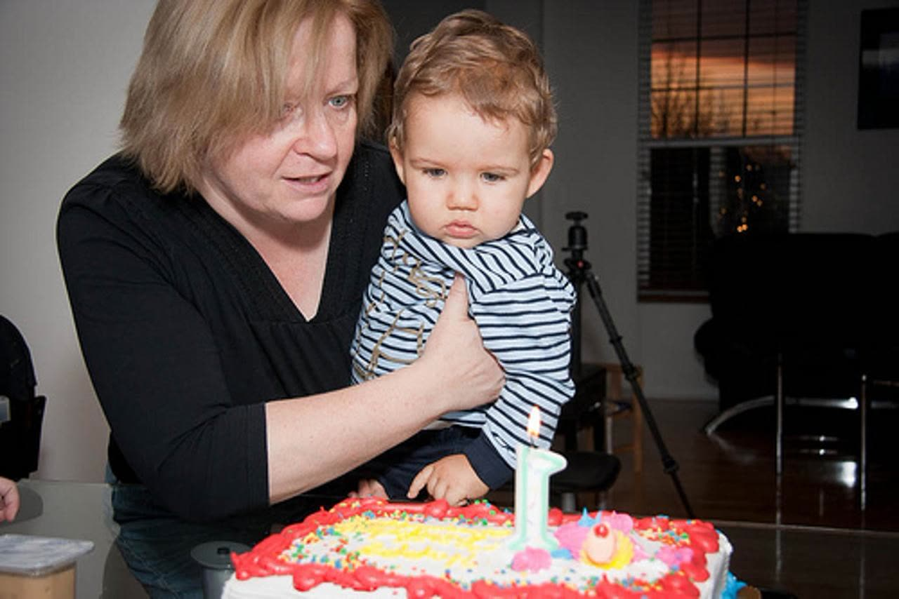
Visual search
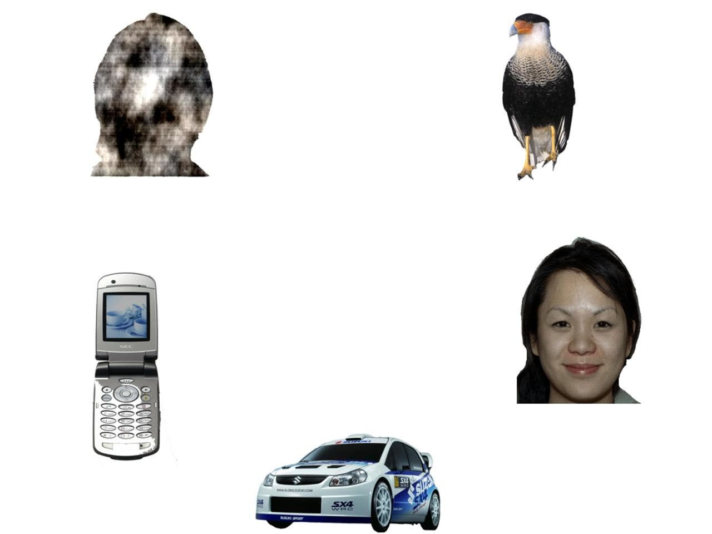
Shic et al. (2022), Molecular Autism. 280 autistic and 119 typically developing children.
| ABCCT | ARIA-ET | |
|---|---|---|
| Tracker | EyeLink 1000 Plus, 500 Hz | Tobii Pro Spectrum |
| Tasks | AM, SI, SS, Biological Motion, PLR | AM, SI, SS, PLR |
| Task order | Tasks interleaved | One run per task |
| Trials split across 2 days/sessions | 1 session |
| Task | Trials | Duration | Measures |
|---|---|---|---|
| Activity Monitoring | 16 | 4.7 min | Gaze to faces vs. the shared activity |
| Static Social Scenes | 12 | 3.5 min | Gaze to people in scenes; visual search |
| Social Interactive | 22 | 6.0 min | Gaze to faces in parallel and cooperative play |
| Pupillary Light Reflex | 18 | 1.9 min | Pupil constriction after a light flash |
| Total | 68 | 16.1 min |
Duration is the nominal stimulus time. It does not include calibration, positioning, or breaks. Preview videos: User guide, Task reference.
We buy and ship
The site buys
SetupHardwareCalibrationBatteryExport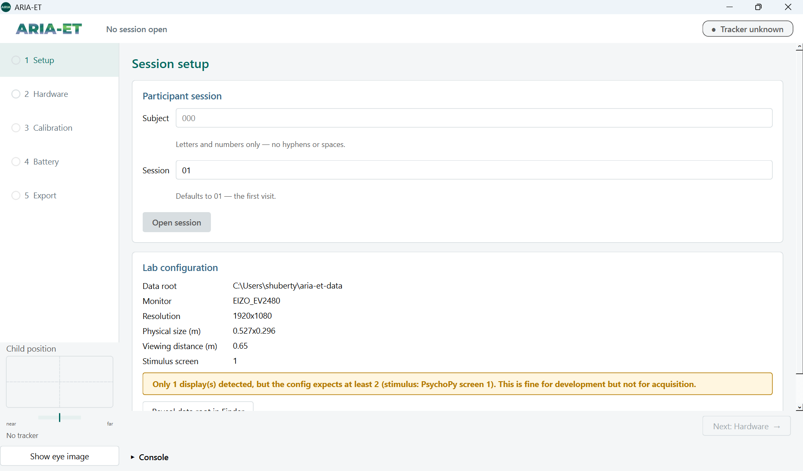
Type the subject and session, click Open session, and check Lab configuration.
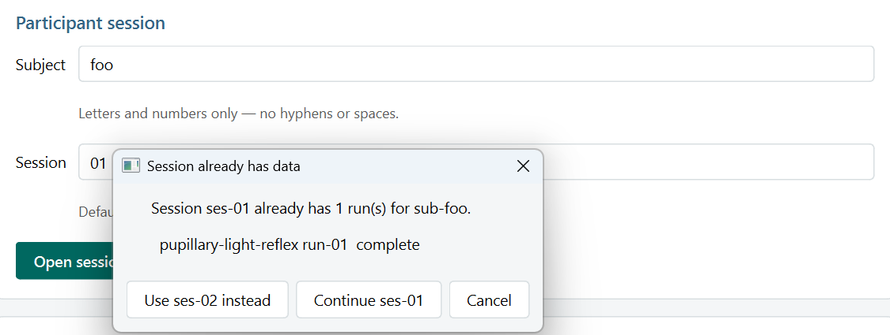
01 for the first visit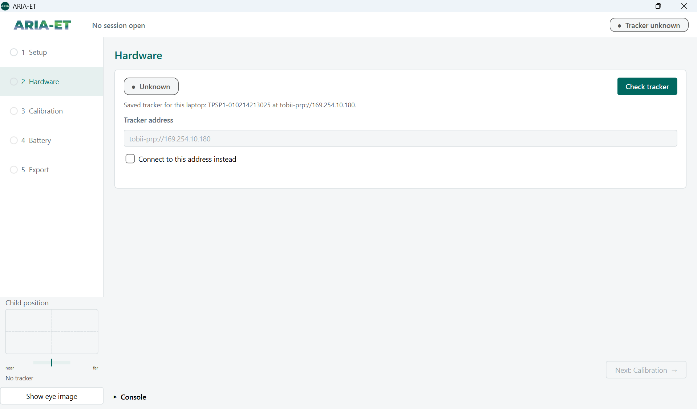
Click Check tracker. The GUI connects to the tracker that is saved for this laptop.
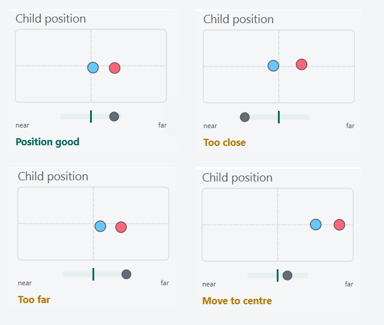
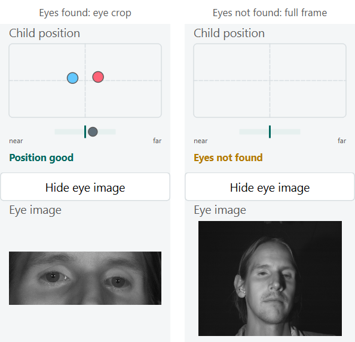
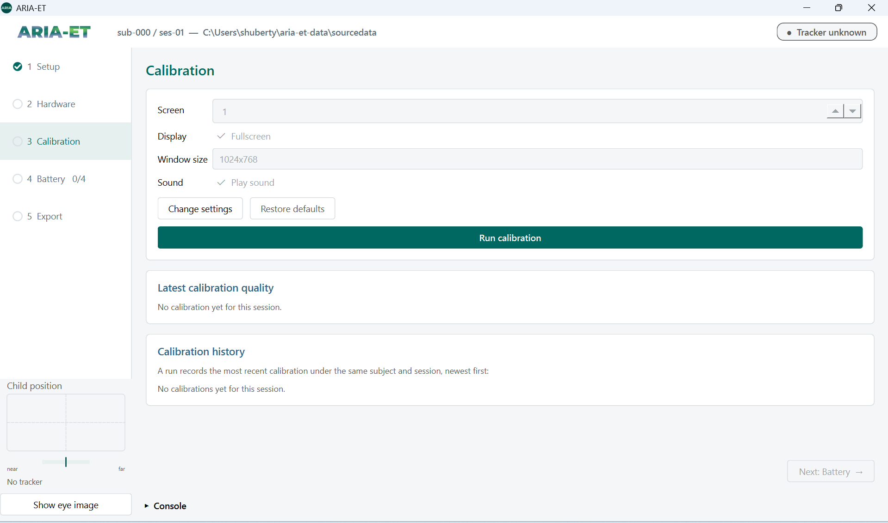
Keep the default settings and click Run calibration.
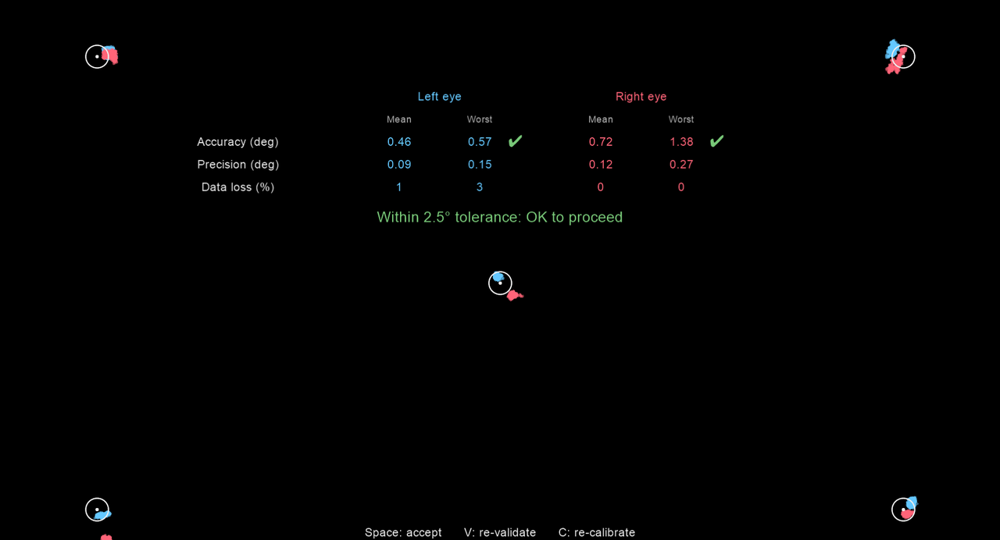
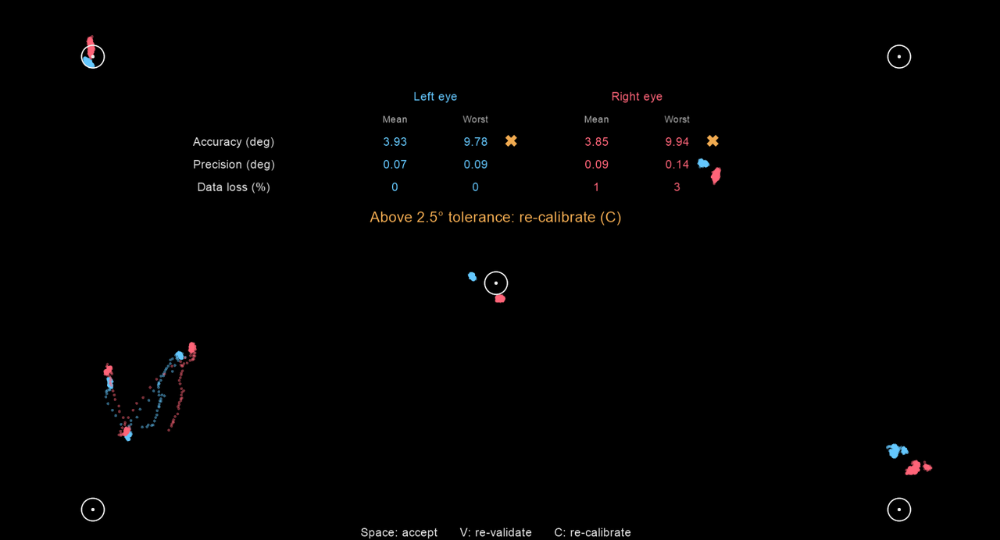
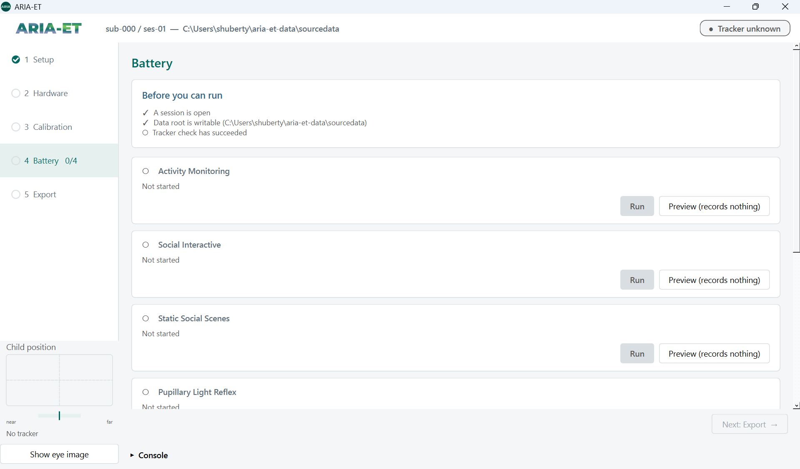
Before you can run needs three check marks. Then click Run on a task card.
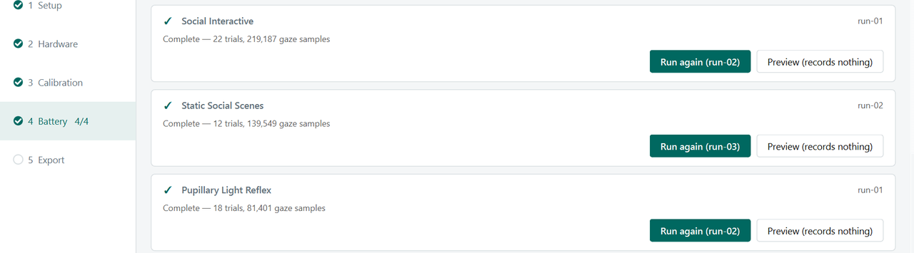
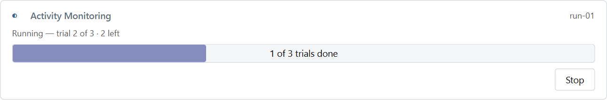
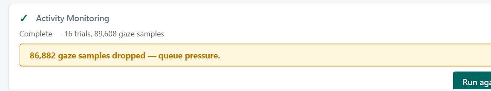
aria-et-data\
├── sourcedata\ raw data, never overwritten
│ └── sub-01\ses-01\
│ ├── calibrations\calibration-<time>\
│ └── task-ActivityMonitoring_run-01\
│ ├── gaze.jsonl one line per gaze sample
│ ├── eye_openness.jsonl eyelid opening, in mm
│ ├── events.jsonl trials and stimuli
│ ├── session.json task, tracker, calibration in effect
│ ├── gaze_writer.json received, written, dropped samples
│ ├── tracker.json serial number, firmware, screen geometry
│ ├── sys_info.json software versions
│ └── session.log task output with time stamps
└── bids\
└── sub-01\ses-01\beh\ events.tsv, eye1 / eye2 physio.tsv.gzExportUploadCheck| Check | What we compare | FAIL when |
|---|---|---|
| Run metadata | system settings at runtime | A value differs |
| Trial count | Trials vs. the task specification | A count differs |
| Missing data | Gaps in the gaze; both eyes valid (reported) | > 0.5 % lost |
Each check reports FAIL, WARN, or INFO for each run. Script: tools/validate_session.py.
CleanInterpolateBlinksSelect, smoothClassifyeyeQuality: an R package for preprocessing and data quality, maintained by our study colleague Jed EllisonCentral team
Site
LASSO
Set up the kit
Buy the laptop and the light meter. Install the ARIA-ET release and the Tobii software. Configure and sign off.
Ship the kit
Receive the kit
Acquisition laptop
Light meter
New release
A signed installer for each update.
Walk-through call
Install the update
With IT on the call.
Record and export
Each session, to BIDS.
Upload
Study data
The raw runs and the BIDS export of each session.
ReleaseCallInstallCheckaria-et sys-infoRemove The same software on every laptop. A lock file (pixi.lock) pins the exact version and build of every package: PsychoPy, the Tobii SDK, DeToX, and the movie decoder. Each installer contains exactly these packages.
AverageCalibrationError, MaximalCalibrationError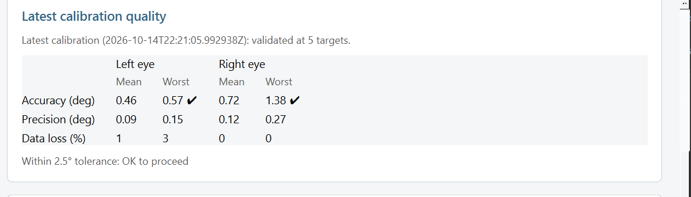
Shic, F., Naples, A. J., Barney, E. C., et al. (2022). The Autism Biomarkers Consortium for Clinical Trials: evaluation of a battery of candidate eye-tracking biomarkers for use in autism clinical trials. Molecular Autism, 13, 15.
Webb, S. J., Shic, F., Murias, M., et al. (2020). Biomarker acquisition and quality control for multi-site studies: the Autism Biomarkers Consortium for Clinical Trials. Frontiers in Integrative Neuroscience, 13, 71. doi:10.3389/fnint.2019.00071
Shic, F., Naples, A., Barney, E., et al. (2022). ABC-CT Data Acquisition and Analytic Core ET Main Study Manual of Operations, Version 5.1.
ARIA-EyeTracking